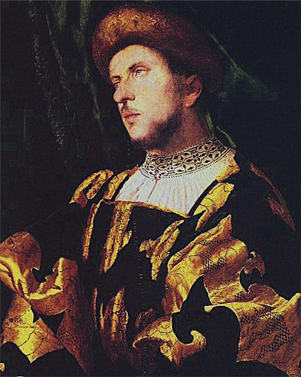

阿卡代尔特（Jacob Arcadelt，约1505—1568）
弗莱芒作曲家。早年情况未知，可能出生于列日或那慕尔。年轻时搬往意大利居住。 1520年代在佛罗伦萨生活并可能与牧歌之父维尔德洛熟识。1538年他搬往罗马居住，并在圣伯多禄大殿任职。 后又在西斯廷大教堂任职并出版了自己的牧歌集。 他的牧歌集出版后即受到欢迎，一共出版了超过45个版本。
他还曾与米开朗基罗合作为他的十四行诗谱写歌曲。1551年后阿卡代尔特回到法国，成为皇家教堂的一员，服务于诺曼底公爵亨利二世与查理九世。
1568年他在巴黎去世。阿卡代尔特的创作都是声乐作品，包括有经文歌、弥撒以及大量的牧歌与香颂歌曲等。
与其他同时代作曲家不同，他也写了许多小调，尤其是晚年在巴黎居住期间。
作为早期牧歌的代表人物，其代表作有牧歌《洁白而温顺的天鹅》
原文来自知乎用户：胡大水